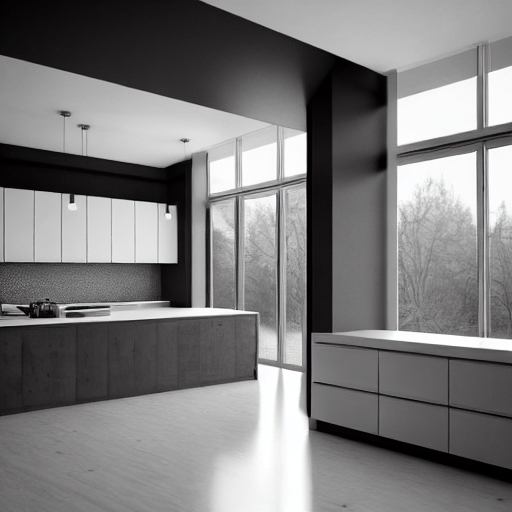

Unsere Ablauf für eine gelungene Küche
1. Anfrage stellen

Die erste Phase eines Küchenprojekts beginnt mit der Anfragestellung. Hier kontaktiert der Kunde uns, um sein
Interesse an einer neuen Küche zu bekunden. In diesem Stadium werden grundlegende Informationen ausgetauscht,
wie die gewünschten Küchenmaße, Stilvorlieben und Budgetvorgaben. Der Kunde kann auch Fragen stellen und sich
über unsere angebotenen Dienstleistungen informieren. Die Anfrage ist der Ausgangspunkt für den gesamten
Projektablauf und dient als Grundlage für die weiteren Schritte in der Küchenplanung und -montage.
2. Planung

Nachdem die Anfrage gestellt wurde, folgt die Phase der Planung. Hier arbeiten wir eng mit dem Kunden
zusammen, um dessen Wünsche und Anforderungen zu verstehen und eine maßgeschneiderte Küchenlösung zu
entwickeln. Es werden verschiedene Aspekte berücksichtigt, darunter das Küchenlayout, die Auswahl der
Materialien, die Einbaugeräte und die ergonomischen Anforderungen. Der Planungsprozess beinhaltet oft auch die
Erstellung von 3D-Visualisierungen, um dem Kunden eine Vorstellung von der geplanten Küche zu vermitteln. Nach
der finalen Abstimmung des Plans geht es in die nächste Phase über.
3. Montage

Die Montagephase ist ein entscheidender Schritt im Projektablauf einer Küche. Nachdem der Plan finalisiert
wurde und alle benötigten Materialien beschafft sind, beginnt unser Montageteam mit der Installation der
Küchenelemente. Dies umfasst den Aufbau der Schränke, die Installation der Arbeitsplatten, das Anbringen von
Spüle und Armaturen sowie den Anschluss der Elektrogeräte. Während dieser Phase ist Präzision und Fachkenntnis
gefragt, um sicherzustellen, dass die Küche fachgerecht montiert wird und allen Qualitätsstandards entspricht.
Nach Abschluss der Montage erfolgt eine gründliche Überprüfung, um sicherzustellen, dass alles den Erwartungen
entspricht.
4. Nachberatung

Auch nach Abschluss der Montage endet die Betreuung des Kunden nicht. Die Nachbeartungsphase ist wichtig, um
sicherzustellen, dass der Kunde mit seiner neuen Küche zufrieden ist und eventuelle Fragen oder Probleme
gelöst werden können. Wir stehen dem Kunden weiterhin zur Verfügung, um Hilfe und Unterstützung anzubieten.
Dies kann die Einweisung in die Nutzung von Geräten, Tipps zur Pflege und Wartung der Küche oder die
Abwicklung von Garantieansprüchen umfassen. Die Nachbeartung trägt dazu bei, eine langfristige
Kundenzufriedenheit sicherzustellen und eine vertrauensvolle Beziehung aufzubauen.